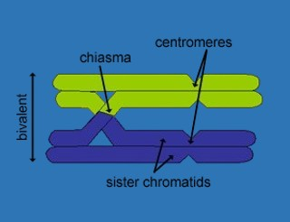
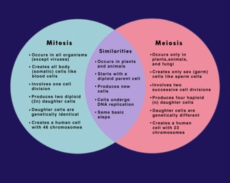
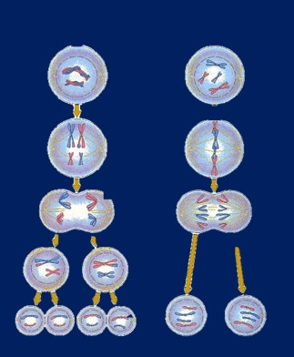

Cell division is a fundamental process in all living organisms, allowing for growth, repair, and reproduction. The two main types of cell division are Mitosis and Meiosis, each with distinct purposes and outcomes. Understanding the precise behavior of chromosomes during these processes is key to grasping their biological significance.

Mitosis: For Growth and Repair
Mitosis is a type of cell division that results in two daughter cells, each having the same number and kind of chromosomes as the parent nucleus. The chromosome number remains constant.
Purpose of Mitosis:
- Growth: Increases the number of cells in a multicellular organism.
- Repair and Replacement: Replaces old or damaged cells (e.g., skin cells, blood cells).
- Asexual Reproduction: How single-celled organisms reproduce, and some multicellular organisms grow.
Key Outcomes of Mitosis:
- Produces two genetically identical daughter cells.
- Daughter cells are diploid (2n), meaning they have a full set of chromosomes.
Stages of Mitosis (M Phase) and Chromosome Behavior:
Before mitosis begins, during Interphase (G1, S, G2 phases), the cell grows, and its DNA replicates. In the S phase, each chromosome duplicates to form two identical sister chromatids joined at the centromere.
- Prophase:
- Chromosomes condense, becoming shorter, thicker, and visible. Each is distinctly seen as two sister chromatids.
- The nuclear envelope breaks down, and the nucleolus disappears.
- Spindle fibers begin to form from centrosomes moving to opposite poles.
- Prometaphase:
- The nuclear envelope completely fragments, allowing the spindle microtubules to invade the nuclear area.
- Each sister chromatid develops a specialized protein structure called a kinetochore at the centromere.
- Microtubules from the spindle poles attach to these kinetochores, pulling the chromosomes into oscillatory movements.
- Metaphase:
- Chromosomes are maximally condensed.
- They align individually along the cell's central plane, called the metaphase plate.
- Crucially, the kinetochore of each sister chromatid attaches to spindle microtubules from opposite poles. This arrangement ensures even distribution.
- Anaphase:
- The cohesin proteins holding sister chromatids together at the centromere suddenly break down.
- Sister chromatids separate, becoming independent chromosomes, and are pulled by shortening spindle fibers towards opposite poles of the cell. The centromere leads the way.
- The cell elongates.
- Telophase:
- Individual chromosomes arrive at opposite poles and begin to decondense.
- New nuclear envelopes form around each set of chromosomes, forming two nuclei.
- Spindle fibers disappear.
- Cytokinesis: The cytoplasm divides, typically creating two separate daughter cells, each with a complete and identical diploid set of single chromosomes.
Meiosis: For Sexual Reproduction and Variation
Meiosis is a specialized type of cell division that reduces the chromosome number by half, creating four haploid cells. It is essential for sexual reproduction and introduces genetic diversity.
Purpose of Meiosis:
- Gamete Formation: Produces sex cells (sperm/eggs) with half the number of chromosomes.
- Genetic Variation: Introduces diversity through crossing over and independent assortment.
Key Outcomes of Meiosis:
- Produces four genetically unique daughter cells.
- Daughter cells are haploid (n), meaning they have half the number of chromosomes of the parent cell.
Stages of Meiosis (Two Divisions) and Chromosome Behavior:
Meiosis involves one round of DNA replication (in Interphase I) followed by two rounds of nuclear division (Meiosis I and Meiosis II).
Meiosis I (Reductional Division):
This division separates homologous chromosomes and reduces the chromosome number from diploid to haploid.
- Interphase I: Cell grows, and DNA replicates in the S phase, so each chromosome consists of two sister chromatids.
- Prophase I:
- Chromosomes condense.
- Synapsis: Homologous chromosomes (one from each parent) pair up precisely along their length, forming bivalents (or tetrads, due to four chromatids). This pairing is unique to meiosis.
- Crossing Over: Genetic material is exchanged between non-sister chromatids of homologous chromosomes at points called chiasmata. This creates recombinant chromosomes, increasing genetic variation.
- Nuclear envelope breaks down.

- Metaphase I:
- Homologous pairs (bivalents/tetrads), NOT individual chromosomes, align along the metaphase plate.
- Independent Assortment: The orientation of each homologous pair is random, contributing further to genetic diversity in the resulting gametes. Each homologous chromosome is attached to spindle fibers from one pole.
- Anaphase I:
- Homologous chromosomes separate and move towards opposite poles.
- Crucially, sister chromatids remain attached at their centromeres and move as a single unit to the same pole. This is a major distinction from mitosis.
- The chromosome number at each pole is now haploid (n), but each chromosome is still duplicated (two chromatids).
- Telophase I & Cytokinesis:
- Chromosomes arrive at poles (haploid number, but duplicated).
- New nuclear envelopes may form. Cytokinesis divides the cell, resulting in two haploid cells.
Meiosis II (Equational Division):
This division separates sister chromatids, similar to mitosis but occurring in two haploid cells.
- Interkinesis: A brief resting period may occur between Meiosis I and II, but no DNA replication takes place.
- Prophase II: Chromosomes condense again (if decondensed). New spindles form in each of the two haploid cells.
- Metaphase II: Chromosomes (each with two sister chromatids) align individually along the metaphase plate of each cell. Sister chromatids are attached to spindle fibers from opposite poles.
- Anaphase II: Sister chromatids separate at their centromeres and are pulled to opposite poles as individual chromosomes.
- Telophase II & Cytokinesis: Chromosomes arrive at poles and decondense. New nuclear envelopes form. Cytokinesis divides each cell, resulting in a total of four genetically unique haploid daughter cells, each containing single (un-duplicated) chromosomes.
Key Differences in Chromosome Behavior
- DNA Replication: Once before Mitosis; Once before Meiosis I (none before Meiosis II).
- Homologous Pairing: Occurs only in Prophase I of Meiosis (forming bivalents/tetrads). Absent in Mitosis.
- Crossing Over: Occurs only in Prophase I of Meiosis, creating genetic recombination. Absent in Mitosis.
- Metaphase Alignment:
- Mitosis & Meiosis II: Individual duplicated chromosomes align.
- Meiosis I: Homologous pairs align.
- Anaphase Separation:
- Mitosis & Meiosis II: Sister chromatids separate.
- Meiosis I: Homologous chromosomes separate (sister chromatids remain attached).
- Outcome:
- Mitosis: 2 genetically identical diploid cells.
- Meiosis: 4 genetically unique haploid cells.

Written by Kasiban Parthipan